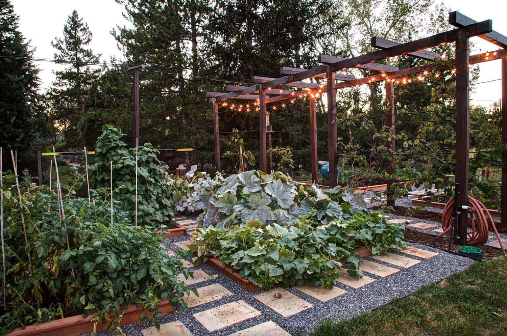

Living on Earth
Why protect the earth
The earth is home to millions of species of plants and animals, each playing a unque part in our earth's ecosystem. The extinction of a species will affect us without a shadow of doubt. We need to preserve biodiversity, such as the health and the balance of our earth's ecosystems.
The earth's climate is affected by complex interactions between the atmosphere, oceans, and land. Human activities, such as burning fossil fuels and deforestation, have led to an influx of greenhouse gas emissions, resulting in global warming. Reducing these emissions and mitigating the effects of climate change will protect earth.
The earth provides us with natural resources such as water, air, and soil, which are essential for our survival. To ensure sustainable use of the resources means that future generations can also benefit from them.
Protecting it can also have economic benefits, such as increasing job opportunity in the renewable energy sector and the development of sustainable tourism.


Measures taken now
#TEAMSEAS

Team Seas, stylized as #TEAMSEAS, is an international collaborative fundraiser that was started by YouTubers MrBeast and Mark Rober as a follow up to Team Trees. The fundraiser succeeded in raising over 33 million U.S. dollars. All of the donations from the fundraiser go to the Ocean Conservancy and the Ocean Cleanup, with the organisations splitting the donations. The fundraiser pledges to remove 30,000,000 pounds (14,000,000 kg) of marine debris from the ocean by removing 1 pound (0.45 kg) of marine debris from the ocean for every 1 dollar donated. As of 30 April 2023, $33,333,279 has been raised.
#TEAMTREES
Team Trees, stylized as #TEAMTREES, is a collaborative fundraiser that raised 20 million U.S. dollars before the start of 2020 to plant 20 million trees. The initiative was started by American YouTubers MrBeast and Mark Rober, and was mostly supported by YouTubers. All donations go to the Arbor Day Foundation, a tree planting organization that pledges to plant one tree for every U.S. dollar donated. The Arbor Day Foundation began planting in January 2020 and plans to end "no later than December 2022". It is estimated that 23 million trees would take up 210 km2 of land, absorb around 1.6 million tons of carbon and remove 116 thousand tons of pollutants from the atmosphere. As of 17 March 2023, the project has raised $24,335,381, exceeding the fundraiser's goal to plant 20 million trees. As anticipated, more than 20 million trees have been planted.
Personal Goals
Backyard Garden

Environmental Benefits:
Growing your own food reduces the carbon emissions associated with transporting and packaging food.
It minimizes the energy required for long-distance transportation.
Health Benefits:
Homegrown produce is typically fresher, more nutritious, and free from chemical residues compared to store-bought options.
Growing your own food provides a level of self-sufficiency, ensuring a consistent supply of fresh produce, even during disruptions in the food system.
Economic Impact:
Growing your own food can lead to significant cost savings, as seeds and inputs are generally more affordable than buying produce regularly.
Hosting An Eco-Event

Raising Awareness:
An eco event provides an opportunity to educate and raise awareness among attendees about environmental issues, sustainable practices, and the importance of protecting the Earth.
This increased awareness can inspire individuals to adopt more eco-friendly behaviors in their daily lives.
Showcasing Eco-friendly Technologies: An eco event can be an opportunity to showcase and demonstrate innovative, eco-friendly technologies and solutions. For example, I want to host an Event similar to the National Steps Challenge. Where the participants run for rewards while improving their health However, tweak it where instead of running for health, they run for lower carbon footprint.
Living a sustainable lifestyle
Reduce, reuse, and recycle:
Minimize waste by reducing your consumption, reusing items whenever possible, and recycling materials such as paper, plastic, glass, and metal.
Conserve energy:
Turn off lights when not in use, unplug electronics when they're not being used, use energy-efficient appliances and light bulbs, and consider using renewable energy sources like solar power.
Conserve water:
Be mindful of your water usage by taking shorter showers, fixing leaks promptly, watering plants efficiently, and using water-saving appliances and fixtures.
Opt for eco-friendly products:
Choose environmentally friendly products such as biodegradable cleaning supplies, natural personal care products, and reusable items like shopping bags, water bottles, and coffee cups.